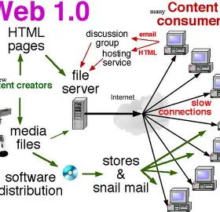

Web 1.0 refers to the first generation of the World Wide Web, spanning roughly from 1991 to 2004. It is often described as the read-only web because websites during this era were static and delivered information in only one direction — from the website to the visitor. Users could read content but had no way to interact with or contribute to it.

Web 1.0 had several defining characteristics that set it apart from later generations of the web:
Web 1.0 was driven and controlled by the powers-that-be — meaning organizations, companies and website owners. Ordinary users had no ability to contribute content, share opinions or interact with the website in any meaningful way. The web was purely a platform for delivering information, not for participation.
The most significant difference between Web 1.0 and Web 2.0 is the direction of information flow. In Web 1.0, information flowed only one way — from the website to the visitor. In Web 2.0, information flows two ways, allowing users to both consume and create content. Web 1.0 was the foundation that made everything that came after it possible.